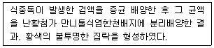
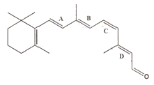

식품산업기사(구) (2008-05-11 기출문제)
1과목: 식품위생학
1. 식품에 사용이 허용된 감미료는?
- sodium saccharin
- cyclamate
- nitrotoluidine
- ethylene glycol
(정답률: 알수없음)

2. 어떤 물질의 LD50값이 낮음이 의미하는 것은?
- 독성이 작다.
- 독성이 크다.
- 보존성이 작다.
- 보존성이 크다.
(정답률: 알수없음)
3. 식품 포장재료로 사용디는 알루미늄의 특성이 아닌 것은?
- 무미·무취하다.
- 염소 이온에 강하다.
- 방습·방기성이 우수하다.
- 지방질 식품의 포장에 적합하다.
(정답률: 알수없음)
4. 곡류, 곡분, 건조과실 등 저장식품에서 흔히 발견되며 몸길이가 0.3~0.5mm정도인 유백색 타원형 진드기는?
- 설탕진드기
- 먼지진드기
- 긴털가루진드기
- 흡혈진드기
(정답률: 알수없음)
5. 각 위생동물과 관련된 식품, 위해와의 연결이 틀린 것은?
- 진드기 : 설탕, 화학조미료 – 진드기뇨증
- 바퀴 : 냉동 건조된 곡류 – 디프테리아
- 쥐 : 저장식품 – 장티푸스
- 파리 : 조리식품 – 콜레라
(정답률: 알수없음)
6. 호기성 세균을 폐수에 20℃로 5일간 배양한 뒤 산출할 수 있는 수치는?
- 용존산소(DO)
- 생물학적 산소요구량(BOD)
- 화학적 산소요구량(COD)
- 용해성 물질(Soluble matter)
(정답률: 알수없음)
7. 피마자씨에 함유되어 있는 독성물질은?
- 리신(ricin)
- 아미그달린(amygdalin)
- 고시폴(gossypol)
- 솔라닌(solanine)
(정답률: 알수없음)
8. 식품등의 표시기준을 수록한 식품등의 공전을 작성·보급 하여야 하는 자는?
- 농림수산식품부장관
- 식품의약품안전청장
- 보건복지가족부장관
- 농촌진흥청정
(정답률: 알수없음)
9. 미생물 중 특히 곰팡이의 증식을 억제하여 치즈, 식육가공품 등에 사용하는 합성보존료는?
- sorbic acid
- salicylic acid
- benzoic acid
- dehydroacetic acid
(정답률: 알수없음)
10. 식품위생 검사시 채취한 검체의 취급상 주의사항을 설명한 것으로 틀린 것은?
- 저온 유지를 위해 얼음을 사용할 때 얼음이 검체에 직접 닿게 하여 저온유지 효과를 높인다.
- 검체명, 채취장소, 일시 등 시험에 필요한 참고사항을 기재한다.
- 운반시 운반용 포장을 하여 파손 및 오염이 되지 않게 한다.
- 미생물학적 검사를 위한 검체는 반드시 무균적으로 채취한다.
(정답률: 알수없음)
11. 해수, 플라크톤, 어패류에 분포하고 있으며 중독시 콜레라와 비슷한 증상이 나타나는 식중독 원인세균은?
- 대장균
- 장염비브리오균
- 살모넬라균
- 시겔라균
(정답률: 알수없음)
12. 다음 중 Aspergillus flavus의 생육에 가장 적당한 조건은?
- 25~30℃, 상대습도 80%
- 25~30℃, 상대습도 10%
- 0~5℃, 상대습도 60%
- -5~0℃, 상대습도 70%
(정답률: 알수없음)
13. 아래의 설명과 가장 관계가 깊은 식중독 원인균은?

- 포토상구균
- 장염비브리오균
- 살모넬라균
- 부르셀라균
(정답률: 알수없음)
14. 다음 중 바퀴벌레의 상태가 아닌 것은?
- 야간활동성
- 독립생활성
- 잡식성
- 가주성
(정답률: 알수없음)
15. 광우병에 대한 설명으로 틀린 것은?
- 병원체인 인지질의 화학구조가 변질되어 발생한다.
- 감염시 뇌조직에 구멍이 생겨 스펀지 모양이 된다.
- 4~5세의 소에서 주로 발생하는 전염성 뇌질환이다.
- 일반적으로 소독법으로는 병원체가 파괴되지 않는다.
(정답률: 알수없음)
16. 엔테로톡신을 생성하는 식중독 원인균은?
- Salmonella균
- Staphy lococcus균
- Listeria균
- Arizona균
(정답률: 알수없음)
17. 합성수지제 용기의 용출시험에서 가장 문제가 되는 물질은?
- 메탄올
- 에탄올
- 포름알데히드
- 광명단
(정답률: 알수없음)
18. 식품첨가물공전의 총칙과 관련된 설명으로 틀린 것은?
- 중량백분율을 표시할 때는 %의 기호를 쓴다.
- 중량백만분율을 표시할 때는 ppb의 기호를 쓴다.
- 용액 100mL 중의 물질함량(g)을 표시할 떄에는 w/v%의 기호를 쓴다.
- 용액 100mL 중의 물질함량(mL)을 표시할 때에는 v/v%의 기호를 쓴다.
(정답률: 알수없음)
19. 식품에 항생물질이 잔류할 때 일어날 수 있는 문제점과 거리가 먼 것은?
- 알레르기 증상의 발현
- 항생제 내성균의 출현
- 급성중독으로 인한 식중독 발생
- 감염증의 변모
(정답률: 알수없음)
20. 식품위생검사 중 여과법, 침강법, 체분별법의 목적은?
- 잔류농약 검사
- 착색료 검사
- 이물 검사
- 변질 검사
(정답률: 알수없음)
2과목: 식품화학
21. 쌀 1g을 취하여 질소를 정량한 결과, 전질소가 1.5%일 때 쌀 중의 조단백질 함량은? (단, 질소계수는 6.25로 가정한다.)
- 약 8.4%
- 약 9.4%
- 약 10.4%
- 약 11.4%
(정답률: 알수없음)
22. 다음 중 프로비타민(provitamin) A는?
- β-carotene
- lycopene
- lutein
- zeaxanthin
(정답률: 알수없음)
23. 다음 중 단백질 종류와 그 예의 연결이 옳은 것은?
- 지단백질 – 미오신(myosin)
- 당단백질 – 카제인(casein)
- 핵단백질 – 뮤신(mucin)
- 인단백질 – 비텔린(vitelline)
(정답률: 알수없음)
24. 다음 중 체지방의 역할에 대한 설명으로 틀린 것은?
- 내장기관을 보호하고 그 위치를 안정시킨다.
- 열전도도가 낮으므로 체온의 방산을 방지한다.
- 다른 영양소에 비해 열량면에서 저장물질로 유리하다.
- 생물체의 유전정보 유지에 가장 중요한 요소이다.
(정답률: 알수없음)
25. 튀김과 같이 유지를 고온에서 오랜 시간 가열하였을 때 나타나는 반응과 거리가 먼 것은?
- 비누화반응
- 열분해반응
- 산화반응
- 중합반응
(정답률: 알수없음)
26. 다음 중 점탄성체가 가지는 성질이 아닌 것은?
- 예사성
- 유화성
- 경점성
- 신전성
(정답률: 알수없음)
27. 다음 지방산 중 필수지방산이 아닌 것은?
- linoleic acid
- linolenic acid
- oleic acid
- arachidonic acid
(정답률: 알수없음)
28. 알칼리성 식품의 의미는?
- K, Mg, Na이 많은 식품
- 육류, 곡류 등의 식품
- 떫은 맛을 내는 식품
- 산성식품을 NaOH로 처리한 식품
(정답률: 알수없음)
29. 식품의 텍스쳐(texture)를 나타내는 변수와 가장 관계가 적은 것은?
- 경도(hardness)
- 굴절률(refractive index)
- 탄성(elasticity)
- 부착성(adhesiveness)
(정답률: 알수없음)
30. 감자의 영양성분 함량은 수분 78.5%, 탄수화물 18.5%, 무기질 0.5%, 지방 0.2%, 단백질 2.1%이다. 감자 100g의 열량은? (단, 에트워터 계수(Atwater factor)를 이용하여 계산)
- 84.2kcal
- 86.8kcal
- 93.7kcal
- 175.7kcal
(정답률: 알수없음)
31. 선도가 저하된 해산어류의 특유한 비린 냄새 원인은?
- 피페리딘(piperidine)
- 트리메틸아민(trimethylamie)
- 메틸머캡탄(methyl mercaptane)
- 액틴(actin)
(정답률: 알수없음)
32. 다음 식품 중 전분의 호점화와 관계가 없는 것은?
- 토스트
- 미숫가루
- 라면
- 팽화식품
(정답률: 알수없음)
33. 유지의 요오드가(iodine value)가 높을 때 그 의미는?
- 고급지방산의 함량이 많다.
- 저급지방산의 함량이 많다.
- 포화지방산의 함량이 많다.
- 불포화지방산의 함량이 많다.
(정답률: 알수없음)
34. 식품의 기본 맛 4가지 중 해리된 수소이온(H+)과 해리되지 않은 산의 염에 기인하는 것은?
- 단맛
- 짠맛
- 신맛
- 쓴맛
(정답률: 알수없음)
35. 아래의 그림에서이중결합이 cis형인 위치의 기호는?

- A
- B
- C
- D
(정답률: 알수없음)
36. 15%의 설탕용액에 0.15%의 소금용액을 동량 가하면 용액의 맛은?
- 짠맛이 증가한다.
- 단맛이 증가한다.
- 단맛이 감소한다.
- 맛의 변화가 없다.
(정답률: 알수없음)
37. 관능적 특성의 측정 요소들 중 반응척도가 갖추어야 할 요건이 아닌 것은?
- 단순해야 한다.
- 편파적이지 않고 공평해야 한다.
- 관련성이 있어야 한다.
- 차이를 감지할 수 없어야 한다.
(정답률: 알수없음)
38. 맥주의 거품에 대한 설명으로 옳은 것은?
- 온도가 낮아지면 액체의 표면장력은 작아지기 때문에 찬 맥주는 거품이 잘 일어난다.
- 온도가 낮아지면 액체의 표면장력은 커지기 때문에 찬 맥주에서는 거품이 잘 일어난다.
- 온도가 높아지면 액체의 표면장력은 작아지기 때문에 따뜻한 맥주는 거품이 잘 일어난다.
- 온도가 높아지면 액체의 표면장력은 커지기 때문에 따뜻한 맥주는 거품이 잘 일어난다.
(정답률: 알수없음)
39. 식품의 갈변 반응에 관여하는 효소는?
- protease
- lactase
- pectinase
- polyphenol oxidase
(정답률: 알수없음)
40. 식품을 가열할 때 당이 공존하면 아미노산의 손실이 큰 주된 이유는?
- 마이야르(Millard) 반응이 일어나기 때문이다.
- 아미노산의 파괴를 촉진하기 때문이다.
- 단백질이 변질되기 때문이다.
- 탈수가 일어나기 때문이다.
(정답률: 알수없음)
3과목: 식품가공학
41. 식품의 유통기한 설정실험의 방법으로 틀린 것은?
- 유통기한은 기본적으로 식품을 제조·가공하는 식품 제조·가공업자가 유통기한 설정실험을 통해 과학적으로 설정한다.
- 직접 유통기한 설정실험을 수행하지 못하는 경우 의뢰서를 작성하여 외부 연구기관에 의뢰할 수 있다.
- 실험에 사용되는 검체는 생산·판매하고자 하는 제품의 공정을 효율적으로 변형하여 실시한다.
- 특별한 경우 국·내외 식품관련 학술지 및 논문, 정부기관의 보고서를 이용하여 유통기한을 설정할 수 있다.
(정답률: 알수없음)
42. 경화유 제조시에 첨가되는 물질과 촉매는?
- H2 첨가, Ni 촉매
- Cu 첨가, Pb 촉매
- O2 첨가, Cu 촉매
- Fe 첨가, Al 촉매
(정답률: 알수없음)
43. 산당화법에 사용되는 전분 분해제 중 사용 후 중화했을 때 생성되는 입자가 크고 용해도가 작은 특징을 가진 것은?
- 수산
- 염산
- 황산
- 초산
(정답률: 알수없음)
44. 초임계가스 추출법에 대한 설명 중 틀린 것은?
- 초임계가스란 압력 및 온도가 임계점을 넘은 가스를 말한다.
- 추출 및 분리를 보다 낮은 온도에서 행할 수 있다.
- 식품공업에서는 탄산가스를 주로 사용하고 있다.
- 압축, 회수, 분리 등의 공정이 필요없이 설비가 간단하다.
(정답률: 알수없음)
45. 우리나라에서 이용하는 식물성 유지 자원과 거리가 먼 것은?
- 밑겨
- 쌀겨
- 유채
- 참깨
(정답률: 알수없음)
46. 도살 후 육류의 사후강직이 최대치를 나타낼 때의 pH는?
- pH 7.4 정도
- pH 6.4 정도
- pH 5.4 정도
- pH 4.4 정도
(정답률: 알수없음)
47. 결합수의 특성으로 옳은 것은?
- 용매로 작용하지 못한다.
- 미생물 번식에 이용된다.
- 0℃에서 얼기 시작한다.
- 압착 시 제거가 가능하다.
(정답률: 알수없음)
48. 다음 중 제조시 균질화(homogenization) 작업을 하지 않는 것은?
- 시유
- 버터
- 무당연유
- 아이스크림
(정답률: 알수없음)
49. 김치의 일반적인 특성이 아닌 것은?
- 섬유질이 풍부하여 정장작용에 유익하다.
- 유산균 등의 유익균이 많이 존재한다.
- 에너지원 및 단백질원으로서 가치가 높다.
- 발효과정 중 생성되는 유기산 등이 미각을 자극하여 식욕을 돋군다.
(정답률: 알수없음)
50. 미생물의 농도가 107cell/mL인 식품의 121℃에서 0.3분간 가열처리하여 103cell/mL로 감소하였을 때 D121값은?
- 0.01
- 0.⑤
- 0.075
- 0.1
(정답률: 알수없음)
51. 통조림의 주요 4대 공정이 순서대로 바르게 나열된 것은?
- 자숙→탈기→냉각→밀봉
- 탈기→밀봉→살균→냉각
- 탈기→살균→냉각→밀봉
- 밀봉→살균→냉각→탈기
(정답률: 알수없음)
52. 우유로 치즈를 만들 때 CaCl2를 첨가하고, rennet을 첨가하는 주목적은?
- 젖산의 생성을 돕기 위해서
- 우유의 잡균을 제거하기 위해서
- 단백질을 응고시키기 위하여
- 유청을 제거하기 위해서
(정답률: 알수없음)
53. 알코올 발효 중 당분해를 촉매하는 효모에서 얻는 효소의 혼합물은?
- maltase
- zymase
- invertase
- amylase
(정답률: 알수없음)
54. 토마토 가공제품 중 토마토 케첩에 대한 설명으로 옳은 것은?
- 토마토 과육과 액즙을 농축한 것
- 토마토 퓌레를 더 농축해서 전체 고형물 함량을 25% 이상으로 한 것
- 토마토 또는 토마토 농축물을 주원료로 하여 당류, 식초, 식염, 향신료, 구연산 등을 가하여 제조한 것
- 토마토 과육을 곱게 갈아 여과한 후 소금으로 조미한 것
(정답률: 알수없음)
55. 수확한 과일 및 채소의 호흡작용에 대한 설명 중 틀린 것은?
- 저장온도가 상승할 때 호흡량도 증가한다.
- 표면적이 클수록 호흡량이 증가한다.
- 부피대비 중량이 가벼운 것은 호흡량이 적다.
- 저장고 내의 공기 조성은 호흡량에 영향을 준다.
(정답률: 알수없음)
56. 두유를 제조할 때 콩비린내를 없애는 방법이 아닌 것은?
- 100℃의 열수에 침지한 후 마쇄하는 열수침지법
- 5℃이하의 냉수에 30분간 침지한 후 마쇄하는 냉수침지법
- 60℃의 가성소다에 2시간 침지시킨 후 열수와 함께 마쇄하는 알칼리침지법
- 충분히 수침한 콩을 고온의 스팀으로 찌는 종자법
(정답률: 알수없음)
57. 건조기 탱크의 아래쪽에 가압된 열풍을 불어넣어 열풍속에 식품이 약간 뜨게 함으로써 시료와 열풍과의 접촉을 좋게 만든 건조기는?
- 캐비넷 건조기
- 터널식 건조기
- 드럼 건조기
- 부상식 건조기
(정답률: 알수없음)
58. 어류에 많이 포함되어 있는 EPA(eicosapentaenoic acid)와 DHA(docosahexaenoic acid)는 어떤 성분인가?
- 포화지방산
- 불포화지방산
- 가용성 질소
- 아미노태 질소
(정답률: 알수없음)
59. 과일의 형태에 따른 분류와 그 예로 옳은 것은?
- 인과류 : 복숭아, 매실
- 핵과류 : 사과, 배
- 장과류 : 딸기, 포도
- 견과류 : 밤, 무화과
(정답률: 알수없음)
60. 젤리 점(jelly point)을 결정하는 방법에 대한 설명으로 틀린 것은?
- 컵 법(Cup test)시 농축액을 찬물이 들어있는 컵 속에 떨어뜨려 밑바닥까지 굳은 채로 떨어지면 가열이 덜 된 것이고, 도중에 흩어지면 가열이 제대로 된 것이다.
- 스푼 법(Spoon test)시 액이 묽은 시럽상태가 되어 떨어지는 것은 가열이 불충분한 것이고, 스푼에 일부가 붙어서 얇게 펴진 상태는 가열이 제대로 된 것이다.
- 굴절당도계를 이용하여 농축액의 당도를 측정하였을 때 65%정도가 되면 좋다.
- 뜨거울 때 굴절당도계를 이용하여 측정하면 상온에서 보다 2~3% 정도 작은 값을 나타내므로 온도보정을 고려하여야 한다.
(정답률: 알수없음)
4과목: 식품미생물학
61. 효소와 그 기능의 연결이 틀린 것은?
- invertase – 인공벌꿀 생산
- protease – 제빵시 반죽 개량
- glucose oxidase – 주스에서 산소를 제거
- glucose isomerase – 난백으로부터 난황의 제거
(정답률: 알수없음)
62. 세균의 대표적인 중식 방법은?
- 출아법
- 분열법
- 유포자 형성
- 무성포자 형성
(정답률: 알수없음)
63. 다음 중 유성생식 포자는?
- 자낭 포자
- 후막 포자
- 내생 포자
- 외생 포자
(정답률: 알수없음)
64. 부패한 통조림에서 발견되며, 포자를 형성하는 그람 양성의 혐기성균으로, catalase 시험시 음성으로 판정되는 균은?
- Bacillus속
- Lactobacillus속
- Clostridium속
- Pseudomonas속
(정답률: 알수없음)
65. 버섯에 관한 설명으로 틀린 것은?
- 버섯의 자실체가 형성되는 것은 3차 균사시기이다.
- 균사에 균반(취상돌기, clamp connection)이 형성되는 시기는 2차 균사시기이다.
- 버섯의 포자가 형성되는 부분은 갓의 빝부분인 주름(gills)이다.
- 송이버섯은 소나무 뿌리에서 사물 기생하는 버섯이다.
(정답률: 알수없음)
66. 파아지(phage) 오염에 의한 피해를 입는 발효공업만으로 짝지어진 것은?
- 식혜, 항생물질 제조
- 청주, 유기산 제조
- 식초, 요구르트 제조
- SCP(single cell protein), 핵산 제조
(정답률: 알수없음)
67. 포도당을 발효하여 젖산만 생성하는 젖산발효 균주는?
- 정상형(homofermentative) 젖산균
- α-hetero형 젖산균
- β-hetero형 젖산균
- 가성 젖산균
(정답률: 알수없음)
68. 다음 중 유산균 음료와 관계없는 것은?
- 종균(starter)을 첨가하여야 한다.
- 감미료로 과당, 정백당, 올리고당 등을 사용한다.
- 사용균주는 Lactobacillus heterohiochii이다.
- 정장작용을 한다.
(정답률: 알수없음)
69. 다음 중 분류학상 그 위치가 다른 하나는?
- 녹조류
- 홍조류
- 규조류
- 남조류
(정답률: 알수없음)
70. 효모의 일반적인 사용 용도가 아닌 것은?
- SCP(single cell protein)의 제조
- 공업용 아밀라아제(amylase)의 제조
- 알코올 제조
- 핵산물질의 제조
(정답률: 알수없음)
71. 호기성 내지는 통성혐기성 간균으로 된장류 제조에서 유용하게 사용되는 세균은?
- Proteus속
- Clostridium속
- Bacillus속
- Acetobacter속
(정답률: 알수없음)
72. 발효유를 제조할 때 젖산균은 어떤 조건하에서 발효시켜야 하는가?
- 호기성 조건
- 혐기성 조건
- 미호기성 조건
- 교반상태의 호기성 조건
(정답률: 알수없음)
73. 효모의 증식과 관계가 먼 것은?
- 출아법
- 자낭포자 형성
- 분열법
- 분생포자 형성
(정답률: 알수없음)
74. 다음 중 젖산 발효식품이 아닌 것은?
- 김치
- 치즈
- 요구르트
- 식초
(정답률: 알수없음)
75. 다음 중 치즈 제조와 관련된 미생물이 아닌 것은?
- Streptococcus lactis
- Lactobacillus bulgaricus
- Penicillium chrysogenum
- Propionibacteium shermanii
(정답률: 알수없음)
76. 대장균군 분리동정에 이용되는 당은?
- 포도당
- 젖당
- 맥아당
- 과당
(정답률: 알수없음)
77. 유기산과 생산 미생물과의 연결이 틀린 것은?
- 구연산 - Aspergillus niger
- 초산 - Acetobacter aceti
- 젖산 - Leuconostoc mesenteriodes
- 프로피온산 - Propionibacterium shermanii
(정답률: 알수없음)
78. 포도에 번식해서 산을 소비하여 신맛을 감소시키고, 감미를 높이는 곰팡이는?
- Cladosporium herbarum
- Botrytis cinerea
- Alternaria tenuis
- Trichoderma viride
(정답률: 알수없음)
79. 달걀 전체가 회갈색으로 되고 특히 난황이 검게 되는 흑색부패(black rots)의 원인균은/
- Pseudomonas속
- Serratia속
- Proteus속
- Achromobacter속
(정답률: 알수없음)
80. 포자낭 포자, 포복지, 가근을 형성하는 곰팡이는?
- Mucor속
- Rhizopus속
- Aspergillus속
- Penicillium속
(정답률: 알수없음)